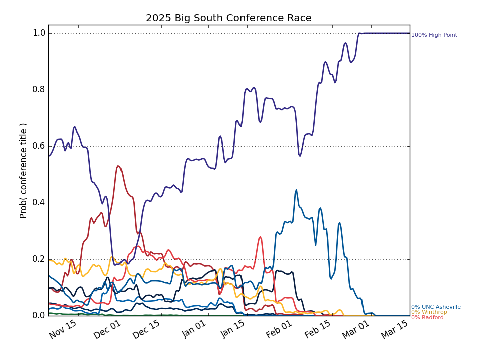

This Week's Games
| Date | Away | W Prob, Pred Score | Home | |||
|---|---|---|---|---|---|---|
| Nov. 30 | Longwood | 34.4% | 74 | 79 | 65.6% | American |
| Nov. 30 | UNC Asheville | 63.1% | 70 | 67 | 36.9% | Appalachian St. |
| Nov. 30 | Presbyterian | 78.5% | 73 | 65 | 21.5% | The Citadel |
| Dec. 02 | Charleston Southern | 32.8% | 70 | 75 | 67.2% | Tennessee Martin |
| Dec. 02 | Winthrop | 64.5% | 80 | 76 | 35.5% | LIU Brooklyn |
| Dec. 02 | UNC Greensboro | 33.0% | 72 | 76 | 67.0% | UNC Asheville |
| Dec. 03 | Coastal Carolina | 30.6% | 71 | 77 | 69.4% | USC Upstate |
| Dec. 03 | Gardner Webb | 10.3% | 74 | 90 | 89.7% | Queens |
| Dec. 03 | Southern Illinois | 20.2% | 76 | 86 | 79.8% | High Point |
| Dec. 03 | Presbyterian | 18.5% | 64 | 74 | 81.5% | Wofford |
| Dec. 03 | Southern Miss | 45.5% | 75 | 76 | 54.5% | Radford |
| Dec. 05 | NJIT | 2.6% | 65 | 91 | 97.4% | High Point |
| Dec. 06 | Coastal Carolina | 9.4% | 69 | 86 | 90.6% | Winthrop |
| Dec. 06 | Georgia Southern | 70.3% | 84 | 78 | 29.7% | Gardner Webb |
| Dec. 06 | Longwood | 66.9% | 85 | 80 | 33.1% | Morgan St. |
| Dec. 06 | Morehead St. | 35.1% | 64 | 68 | 64.9% | Presbyterian |
| Dec. 06 | UNC Asheville | 4.4% | 71 | 93 | 95.6% | North Carolina St. |
| Dec. 06 | Western Carolina | 32.6% | 73 | 78 | 67.4% | USC Upstate |